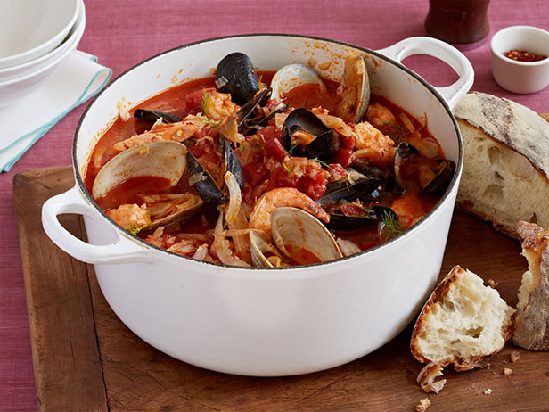

Cioppino

Description
An Italian-American fisherman's stew, is a lighter alternative to heavy holiday meals.
Ingredients
- 3 tablespoons olive oil
- 1 large fennel bulb, thinly sliced
- 1 onion, chopped
- 3 large shallots, chopped
- 2 teaspoons salt
- 4 large garlic cloves, finely chopped
- 3/4 teaspoons dried crushed red pepper flakes, plus more to taste
- 1/4 cup tomato paste
- 1 (28-ounce) can diced tomatoes in juice
- 1 1/2 cups dry white wine
- 5 cups fish stock
- 1 bay leaf
- 1 pound manila clams, scrubbed
- 1 pound mussels, scrubbed, debearded
- 1 pound uncooked large shrimp, peeled and deveined
- 1 1/2 pounds assorted firm-fleshed fish fillets such as halibut or salom, cut into 2-inch chucks
Directions
- Heat the oil in a very large pot over medium heat. Add the fennel, onion, shallots, and salt and saute until the onion is translucent, about 10 minutes. Add the garlic and 3/4 teaspoon of red pepper flakes, and saute 2 minutes. Stir in the tomato paste. Add tomatoes with their juices, wine, fish stock and bay leaf. Cover and bring to a simmer. Reduce the heat to medium-low. Cover and simmer until the flavors blend, about 30 minutes.
- Add the clams and mussels to the cooking liquid. Cover and cook until the clams and mussels begin to open, about 5 minutes.
Add the shrimp and fish. Simmer gently until the fish and shrimp are just cooked through, and the clams are completely open,
stirring gently, about 5 minutes longer (discard any clams and mussels that do not open). Season the soup, to taste, with more salt and red pepper flakes.
- Ladle the soup into bowls and serve.